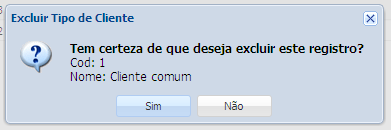

Observação: A opção remover tipo de cliente só é possível caso o tipo de cliente não esteja atrelado a nenhuma ordem de serviço, aberta ou fechada. Caso o tipo de cliente esteja atrelado a alguma ordem de serviço, é necessário usar a opção Ativar, na qual você pode desativar o tipo de cliente, para que o mesmo não esteja mais disponível para ordens de serviço futuras.
1. Selecione o tipo de cliente que deseja remover
2. Clique no botão Remover
3. Abrirá uma nova janela

Caso você queira excluir definitivamente o tipo de cliente selecionado clique no botão Sim caso contrário clique no botão Não.